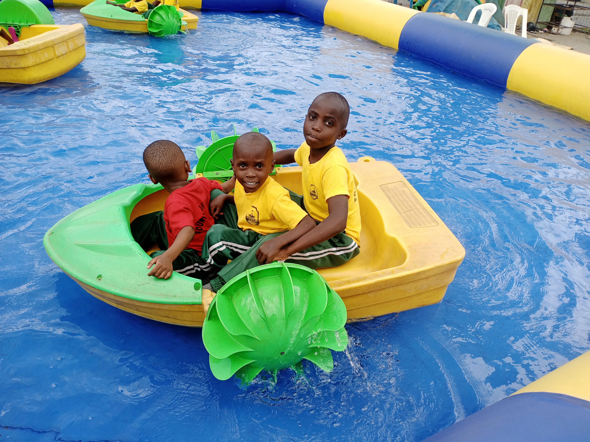
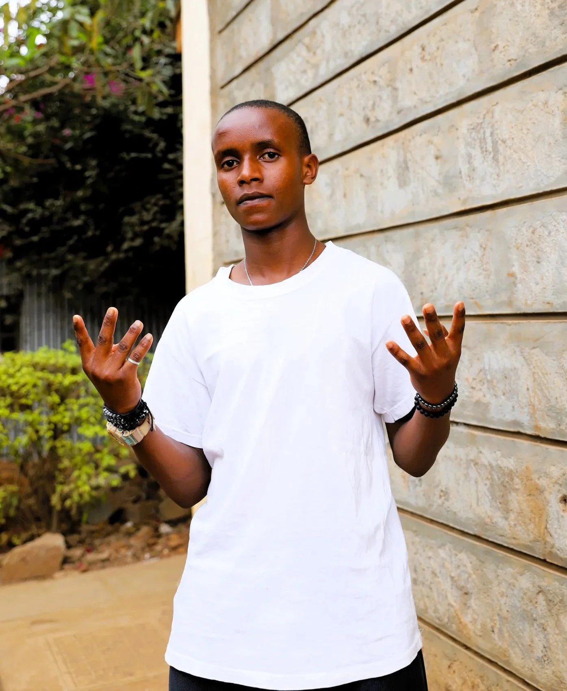

Every child deserves a chance at a better future. These are the stories of children whose lives have been transformed through care, education, and support. Their successes inspire us to continue our mission.
Our Impact in Numbers
What Our Community Says
The voices of volunteers, donors, and families remind us why this work matters.

“The care and structure here give every child a real chance to heal, learn, and grow.”

“Every contribution feels purposeful because the impact is visible in the children’s confidence and progress.”
.webp)
“This home gave me stability, education, and a future. I will always be grateful for that foundation.”
Our Success Stories
From a Child with a Dream to Giving Back Through Technology
The Inspiring Journey of Dennis Mutuku | Fountain of Life Alumnus | Diploma in Business Management | Website Developer & Digital Contributor
Where My Journey Began
My journey with Fountain of Life began in 2011, when I joined the home as a Class Two pupil. The care, guidance, and opportunity to continue my education helped me believe in a future full of possibility.
Turning Education into Opportunity
With determination and continued support, I completed a Diploma in Business Management. That achievement showed me how education and opportunity can open doors and help build a future beyond the circumstances of one's childhood.
Beyond the Classroom: Building a Digital Legacy
To give back to the home that helped shape my life, I took the initiative to develop its website. I used my skills to create a platform where people can learn about Fountain of Life, its work, and how to support the children. For me, this is a practical way to use what I have learned in service of a community that supported me.
Looking Ahead: A Future Built on Purpose
My journey is still unfolding. I hope to keep growing, developing my skills, and contributing to projects that make a difference. From joining Fountain of Life in 2011 to earning my diploma and building its website, my story is one of opportunity, determination, and giving back.

Dennis Mutuku
Fountain of Life was part of my beginning. Today, I am using what I have learned to help build something for its future.
Dennis Mutuku — Fountain of Life Alumnus, Business Management Graduate, and Creator of the Fountain of Life Children's Home Website.
Determination: Paul's High School Path
Age: 10 when admitted | Current Status: Form 4 Student

Paul Mwongela
The Challenge
Paul joined us at age 10. Coming from a background where school was a luxury, he often worried if his education would end at Class 8. He had the marks but lacked the means to join a secondary school.
Our Intervention
We provided full sponsorship for his secondary education, including his uniform, books, and boarding fees. More importantly, he received mentorship to help him navigate his teenage years with confidence.
The Results
Now in Form 4, Paul is an average student and participates in the school’s drama club. He is no longer just "getting by"—he is thriving and dreams of becoming a great businessman to one day help other children like him.
Empowering Leadership: From Vulnerability to Corporate HR
Admitted: 2005 | Diploma Graduate in Human Resource Management | HR Professional & Mentor
The Challenge
When David was admitted to Fountain of Life in 2005, continuing his education and preparing for a professional career presented significant challenges. He needed a stable home, consistent support, and the opportunity to develop his potential.
Our Intervention
Fountain of Life provided David with a stable home and supported his education and personal development. With encouragement and mentorship along the way, he pursued and completed a Diploma in Human Resource Management, building a foundation for his career.
The Results
Today, David works as a Human Resources professional and gives back as a mentor. He shares practical career-readiness guidance with young people, including support with CV writing and interview preparation. His journey demonstrates how education, opportunity, and a commitment to helping others can create lasting impact.

Diploma Graduate in Human Resource Management
Bright Futures: Jeremiah’s CBC Journey
Current Status: Grade 5 CBC Learner

Jeremiah Kioko
The Challenge
Jeremiah joined us when his education was at a standstill. His family was struggling deeply with school fees, making it impossible for him to stay in class consistently. As the new CBC curriculum was introduced, he lacked the basic materials and financial stability required to keep up with his peers.
Our Intervention
Fountain of Life stepped in to remove the financial burden. We provided full scholarship support, covering all his school fees, uniform, and the specific practical materials required for CBC projects. Our caregivers provided the mentorship and stable home environment he needed to focus entirely on his studies.
The Results
Today, Jeremiah is a bright and energetic Grade 8 student. No longer worried about being sent home for fees, he is excelling in his practical assessments and has become one of the most active participants in his class. His journey proves that when the barrier of school fees is removed, a child's potential is limitless.
From Childhood Memories to a Dream of Telling African Stories
Fountain of Life Alumnus | Building Sasapoa Media
Memories That Shaped My Story
When I look back on my life, some of my most meaningful memories take me back to Fountain of Life Children’s Home, where I grew up. I remember the trips, playful moments, laughter, and experiences we shared. They gave us chances to explore, have fun, and create memories together. Looking back, I realise these seemingly ordinary moments are among the things that make a childhood memorable.
I could not have known exactly where life would take me. Like every young person, I had a future full of possibilities waiting to be discovered. Over time, I found my interests, developed my ambitions, and began imagining what I could contribute to the world.
A Dream of Telling African Stories
Today, one of those dreams is taking shape through Sasapoa Media, a media company I am building around my passion for storytelling. My vision is to capture, preserve, and tell African stories the world is yet to see. Behind every person, community, and experience is a story worth preserving. Some stories make us laugh, some challenge us, and others remind us how far we have come. Together, they help us understand who we are and what is possible.
My journey towards storytelling makes me appreciate my own story even more. The memories I carry from Fountain of Life are part of the experiences that have shaped me. Stories do not always begin with extraordinary events; sometimes they begin with a trip, a shared laugh, a childhood adventure, or a moment that becomes meaningful only when we look back years later.

Joseph Owacho
Looking Ahead
Building Sasapoa Media is still a work in progress, with dreams to pursue, challenges to overcome, and much more to learn. I am committed to building a platform that gives people, communities, and African experiences the opportunity to be seen, heard, and remembered.
I carry the memories of where I grew up and the understanding that every life has a story worth telling. Fountain of Life Children’s Home is part of my story. As I work towards telling the stories of others, I am reminded that our beginnings remain an important part of who we become.
I am Joseph Owacho. I grew up at Fountain of Life Children’s Home, and today I am building a company dedicated to telling stories. My own story is still unfolding, and I hope that through the stories I tell, others will discover that their stories matter too.
Key Achievements
- 500+ children served over time
- 95% school enrolment
- 85% academic success
- 40+ college graduates
Ready to Be Part of Success Stories?
Every child deserves a chance to succeed. Your support makes these transformations possible.
Get Involved TodayLeave a Review or Encouraging Message
Your words help us keep showing up for the boys and families we serve.